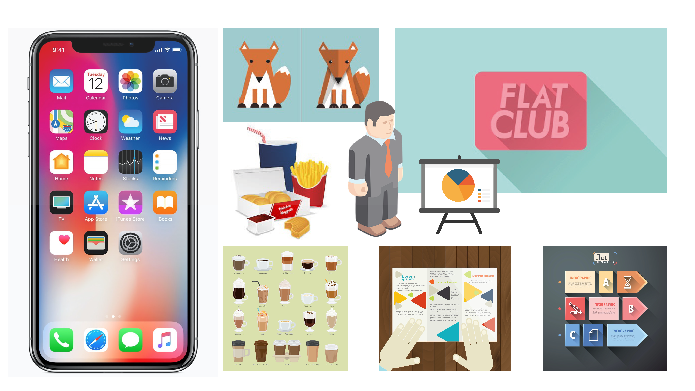

I tema 2 var det endelige slutprojekt et færdigudviklet responsivt website. Under temaet blev jeg introduceret til designprocesserne. Jeg har bl.a. brugt et moodboard til at vise min tildelte stilart – flatdesign – som er karakteriseret ved manglen på tredimensionel grafik, dæmpede farver og ingen stroke lines.
Mit site er bygget op omkring de grundlæggende principper i grafisk design, bl.a. grids, som kan ses i og med at sitet er stylet i CSS med margin og opdelt i kolonner. Ift. gestaltlovene, kan der i de forskellige sektioner i sitet fx ses loven om grupperinger, da flere objekter (billeder) er placeret i samme sektion, og man derfor ser dem som én samlet gruppe.
I mit splashbillede har jeg valgt farverne grøn, orange og rød til pyramiden, da disse farver angiver kulturelt bestemte konnotationer, der gør at brugeren ved, at der skal spises mest fra den grønne del og mindst fra den røde.
Se projektet her.